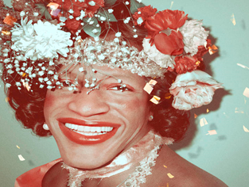

 Informações sobre o Filme: Tempo de Duração: 105 Minutos País: Estados Unidos da América Idioma: Inglês Lançamento: 06 de Outubro de 2017 Gênero: Documentário, Biografia, Policial Classificação: 14+ Estreia no Brasil: 06 de Outubro de 2017 Título Original: The Death and Lie of Marsha P. Johnson Direção: David France
Resenha Crítica
Marsha P. Johson, nasceu como Malcom Michaels Jr e era uma trans que foi demasiadamente importante no movimento LGBT. Depois do dia 28 de junho de 1969, após um grupo de policiais invadirem o bar Stonewall Inn, deu-se o pontapé para iniciar-se o movimento que teve como principal representante e líder, Marsha. Ela, juntamente com Sylvia Rivera, criou um grupo conhecido como S.T.A.R ( Street Transvestite Action Revolutionaries ) que abrigava jovens travestis que não possuíam lugar para morar. Esses jovens sofriam diariamente por serem da comunidade LGBT, muitos sendo espancados e mortos pela onda de massacre que assolava esse grupo na época, principalmente, as mulheres. Marsha foi encontrada morta no rio Hudson em 1992 e disseram que a causa da sua morte foi suicídio.
No entanto, seus familiares e amigos entrevistados para o documentário, relataram que ela era uma pessoa muito feliz, boa e que não faria isso. Seu inquérito foi arquivo e ninguém nunca soube a causa verdadeira da morte de Marsha, levando seus parentes e amigos próximos a acreditarem que ela foi assassinada por ser a representação dos drag queens e toda comunidade LGBT da época.
Apesar de ter se passado muito tempo, a luta de Marsha continua ativa, milhares de mulheres trans, drag queens, travestis, lésbicas e gay são mortos todos os dias e isso continua sendo pouco noticiado. Essas pessoas são agredidas e sofrem preconceito diariamente, são mortas e seus casos continuam sendo arquivos, mesmo sendo pessoas famosas e importantes.
Temas Propostos
Preconceito com a comunidade LGBTQ+: